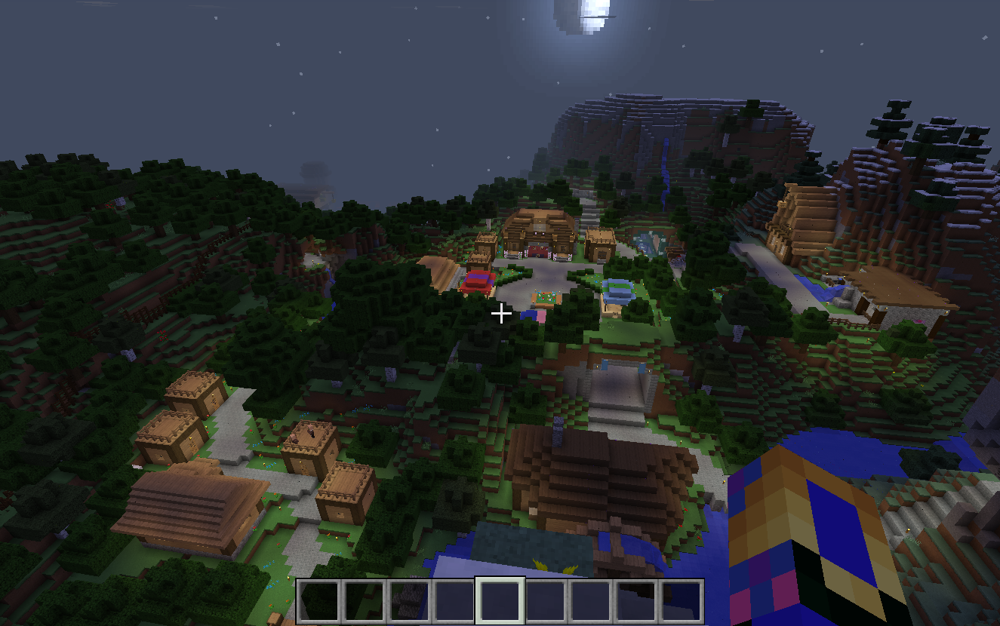

For best viewing experience, we recommend maximizing your browser window.

About
Posted on August 11, 2016 by JMCNation
Welcome to the about page for the Eqestrian Server. This is a location were you can learn about who we are and many other pieces of information that pertain to the server.
Prismic Edge:
Prismic Edge is the operator of the Equestrian Server and is a fictional company used to professionalize updates and information dumps. The goals of the Prismic Edge is to develop new content for the server and fix problems that may arise on the server. Prismic Edge does not make profit in anyway from the server and we do everything because it is a new challenge and fun to develop an area for friends to play together.
[More may be added when needed]
Equestrian Server:
The Equestrian Server is the property of Prismic Edge and is the result of months of work through the year of 2015 and 2016. It is an area for friends to play together and an area that supports high standards. The idea of the Server was created by IronCat217 and I after doing many LAN servers together on Friday nights. We wanted an area that could be accessed any day of the week not just on Friday. The world was designed my me and the command additions were also done by me, however I had indirect help from YouTube videos and Minecraft Fourms Posts. I do not take all the credit and I have tried to get as many names as I could for proper credit. IronCat217 generated the idea of the server and many of the jokes and hidden secrets. He is also response able for being a excellent friend that made the server exist in the first place. Thanks for being a great friend Reed.
[More may be added when needed]
Website Design:
The Prismic Edge website is a location to get Equestrian Server information online. The design process started on July 14th and is a continuing project. Credit is due to Bungie.net and Mojang.com for some design ideas. Content that is not owned by Prismic Edge belongs to their respective owners. Website was developed by me.
[More may be added when needed]
Indirect Help and Credits:
Dan95363-Floating text around world
DirectorCM-Item detection in off hand
Dragnoz-Command assistance
Logdotzip-Command assistance
[MVP] Skylinerw-Lots of command assistance and Silenda of the Past